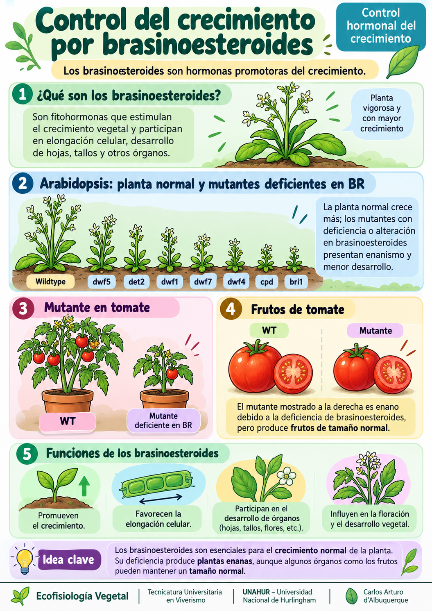

ECOFISIOLOGÍA VEGETAL · CLASE 09 · PARTE II
Pequeñas señales.
Grandes cambios. 🌿
Un mensaje químico puede cambiar una planta. Descubrí cómo las señales y las hormonas coordinan su crecimiento y desarrollo.
9 láminas originales · A tu ritmo · Para estudiar juntos

SEÑALES ✦ AUXINAS ✦ GIBERELINAS ✦ BRASINOESTEROIDES
01 / ENTENDER
El lenguaje de las plantas.
Elegí un tema. Conectá las ideas.
02 / EXPERIMENTAR
La dosis cambia
la respuesta.
Mové el control y compará la respuesta ilustrativa de una raíz y un tallo a la auxina.
Modelo cualitativo: no representa dosis experimentales ni recomendaciones de aplicación.
● RaízArriba: promoción · Abajo: inhibición● Tallo
03 / RECORDAR
Hacé florecer lo que sabés.
TARJETAS DE MEMORIA
DESAFÍO DE REPASO
04 / VOLVER A LAS FUENTES
Tu colección de láminas.
Aprender también es crecer.
Volvé a los temas, conversalos con tus amigos y repetí el desafío cuando quieras.
Volver al repaso ↑